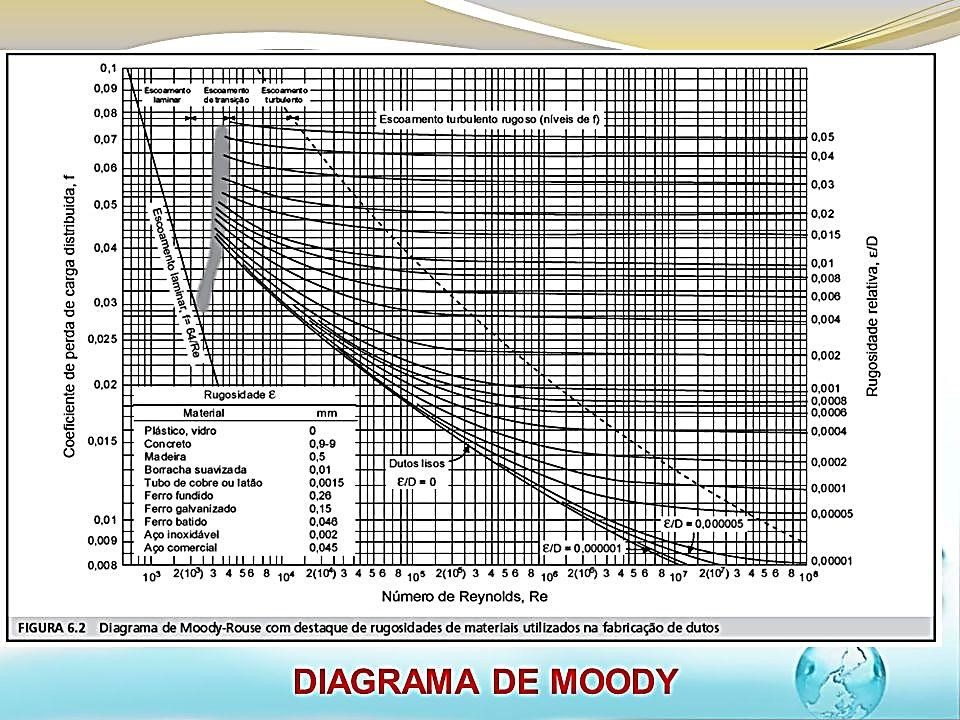

Equação de Darcy-Weisbach ou Universal
Com o intuito de estabelecer leis que possam reger as perdas de carga em tubulações, estudos e pesquisas vêm sendo realizadas acerca de dois séculos. Atualmente a expressão mais precisa e utilizada universalmente para análise de escoamento em tubos, e que foi proposta em 1845, é a conhecida equação de DARCY-WEISBACH. Esta fórmula é de uso geral, tanto serve para escoamento em regime turbulento quanto para o laminar, e é também utilizada para toda a gama de diâmetros, conforme expressa pela seguinte equação: $$hf = \frac{f.V^{2}}{D.2.g}.L \quad \text{ou} \quad hf = \frac{8.f.Q^{2}}{\pi^{2}.g.D^{5}}$$ onde:
O coeficiente de atrito (f) depende do Nº de REYNOLDS (Rey) e da Rugosidade relativa (ε/D); ε -> Rugosidade absoluta
| Material | Rugosidade equivalente (mm) |
|---|---|
| Aço, revestimento asfalto quente | 0,3 a 0,9 |
| Aço, revestimento esmalte centrifugado | 0,01 a 0,06 |
| Aço enferrujado ligeiramente | 0,15 a 0,3 |
| Aço enferrujado | 0,4 a 0,6 |
| Aço muito enferrujado | 0,9 a 2,4 |
| Ferro galvanizado novo, com costura | 0,15 a 0,2 |
| Ferro galvanizado novo, sem costura | 0,06 a 0,15 |
| Ferro fundido revest. asfalto | 0,12 a 0,20 |
| Ferro fundido com crostas | 1,5 a 3,0 |
| PVC e Cobre | 0,015 |
| Cimenti-amianto, novo | 0,05 a 0,10 |
Na literatura moderna aparecem várias expressões para o fator de atrito (f). Nenhuma delas é distinta quanto à concepção geral. A diferença entre elas está no valor e na colocação de uma constante. Sendo elas empíricas, deve-se observar a faixa de validade de cada uma delas antes de seu emprego. Para o regime laminar (Rey < 2000) a fórmula recomendada está expressa na Equação: $$f = \frac{64}{Rey}$$ BLASIUS, que foi o primeiro pesquisador a correlacionar as experiências com tubos lisos em escoamento turbulento, apresentou os resultados por uma fórmula empírica que é válida para Rey até 100000. A fórmula de BLASIUS é apresentada conforme Equação: $$f = \frac{0,316}{Rey^{0,25}}$$ Outra equação válida para região do escoamento turbulento no domínio de Rey entre 5000 e 200000 é dada pela Equação: $$f = \frac{0,184}{Rey^{0,2}}$$ Abaixo segue uma Equação mais exata, válida num intervalo mais amplo, para Rey entre 3000 e 300000: $$f = 0,0056 + \frac{0,5}{Rey^{0,32}}$$ SWAMEE E JAIN (1993) apresentaram uma expressão geral (Equação 14) que calcula o fator de atrito (f) sem restrições quanto ao regime de escoamento, número de Reynolds e rugosidade relativa, reproduzindo bem o diagrama de MOODY $$f = \Biggl\{\biggl( \frac{64}{Rey} \biggl)^{8} + 9,5 \biggl[ ln \biggl( \frac{\epsilon}{3,7D} + \frac{5,74}{Rey^{0,9}}\biggl) - \biggl( \frac{2500}{Rey} \biggl)^{6}\biggl]^{-16}\Biggl\}^{0,125}$$ A resolução destas equações para o fator de atrito exige a aplicação de métodos iterativos de cálculo numérico, que até bem pouco tempo apresentavam dificuldades matemáticas e computacionais. Porém, com o advento das máquinas calculadoras programáveis, bem como das planilhas de cálculos eletrônicas, estes procedimentos vêm se tornando cada vez mais simples. Entretanto, por estes motivos de dificuldade na resolução rápida deste equacionamento, tem-se usado para a tabulação dos dados uma forma gráfica, proposta por MOODY em 1944 e denominado de Diagrama de MOODY. 
Diagrama de MOODY para determinação do fator de atrito (f).